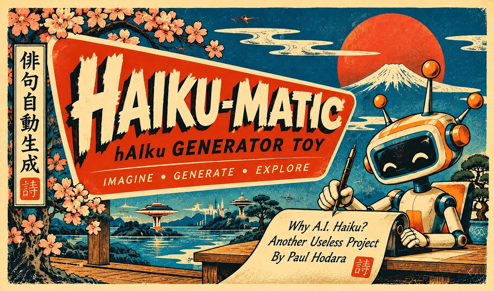
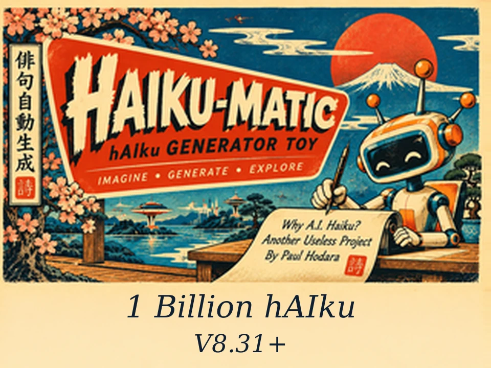
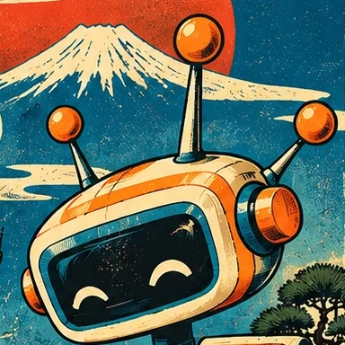
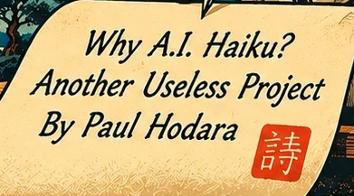

Haiku
Matic
A pocket robot poet that writes original haiku on its own chip, with no internet connection.

What It Is
Haiku-Matic is a pocket poet that writes 5-7-5 haiku on its touchscreen. A tiny language model runs on the board itself, so there is no app, account or network to set up.

| Part | What Is In It |
|---|---|
| Board | LCDWIKI ES3C28P |
| Chip | ESP32-S3, 16 MB flash, 8 MB PSRAM |
| Screen | About 2.8 inches, 320 x 240, run in landscape |
| Touch | FT6336G capacitive, two fingers |
| Sound | ES8311 codec and a small speaker |
| Storage | microSD card for music |
| Light | One RGB LED |
| Model | 28.9 million parameters, 14.9 MB, stored in flash |

Rules check the grammar as each poem is written, but the model is very small and its imagery can wander. Expect the occasional strange poem.
Start It Up
Power it on and wait. You get the splash screen, then the instructions, and if you leave it alone it starts writing by itself.
| When | What Happens |
|---|---|
| First 10 seconds | Splash screen. Touches do nothing yet. |
| Next 25 seconds | Instruction screen. Music starts if the volume is above 0. |
| Left untouched | The first poem starts with your saved settings. |
| Touched during the 25 seconds | The auto-start is canceled. Tap the upper half when you want a poem. |
The splash screen shows the firmware version and your saved poem style.
Touch Map
The screen has two halves and one gesture. Taps act when your finger lifts.
| Control | What It Does |
|---|---|
| Tap upper half | Shows the next poem. If one is ready it appears at once. If not, you watch it being written. |
| Tap lower half | Moves to the next theme and drops poems written ahead for the old one. |
| Two fingers | Opens the menu, anywhere on the screen. |
| RESET | Restarts the board. Saved settings stay. |
| BOOT | Only used when installing firmware. See section 11. |
The touch position is scaled to the screen, so aim straight at what you want to press.
Read The Screen
Three lines of poem, the theme above them, and a status line that only appears when you need it.
| Part | Meaning |
|---|---|
| Top line | The theme in gray capitals. A notice such as Music On or Auto Mode On replaces it for about 3 seconds. |
| Poem | Three lines. Line one ends in "...", the pause a haiku traditionally takes. Long lines shrink to fit. |
| Spinner | A poem is being written and you are waiting for it. |
| Bottom line | Version on the left, battery on the right. It stays up until the first poem, then shows for 10 seconds after each touch. |
Five Themes
Tap the lower half to step through them in this order. The RGB LED shows which one you are on.
| Theme | LED | One Of Its Openers | Written Openers |
|---|---|---|---|
| Spring | Green | Soft rain falls | 10 |
| Summer | Gold | Hot winds blow | 15 |
| Autumn | Orange | Moonlight fades | 10 |
| Winter | Icy blue | Snow falls | 10 |
| Space | Violet | Stars drift past | 34, and it also writes first lines of its own |
The LED glows dim and steady, and slowly breathes while a poem is being written, on screen or ahead of time.
Poem Color
The right arrow on page 1 opens page 2. Tap a swatch to choose the color of the poem.
| On Page 2 | What It Does |
|---|---|
| Swatch | Chooses that color. A ring marks it, and its name appears at the top in that color. |
| Left arrow | Goes back to page 1. |
| Right arrow | Goes to page 3, the poem style. |
| Done | Saves, closes the menu and shows the poem in the new color. |
Poem Style
The right arrow on page 2 opens page 3. Tap a style to change how the next poems are built.
| Style | What It Writes |
|---|---|
| Standard | Each line is chosen on its own. This is where it starts. |
| One-thing | Every line stays with one idea, such as a black hole, falling snow or falling leaves. |
| Two-part | Two images side by side, such as wind in the pines and a still pond. |
| On Page 3 | What It Does |
|---|---|
| Style | Chooses it at once. A filled ring marks it. |
| Left arrow | Goes back to page 2. |
| Right arrow | Goes to page 4, the music. |
| Done | Saves the style and closes the menu. |
Music
Music loops from a microSD card. Page 4 of the menu lists the tracks on the card and picks which one plays. The volume slider on page 1 turns it on and off.
| Step | Set Up The Card |
|---|---|
| 1 | Use a microSD card formatted as FAT32. |
| 2 | Make a folder named haikumatic at the top level. |
| 3 | Copy MP3 files into it. Page 4 shows each file's name without .mp3, with - and _ as spaces, so rename a file to change what it shows. |
| 4 | Put the card in the board and press RESET. |
/haikumatic/ha-uta-umenimo-haru.mp3 /haikumatic/naga-uta-urashima.mp3 /haikumatic/Samurai.mp3 /haikumatic/shika-no-toone-shakuhachi.mp3
| On Page 4 | What It Does |
|---|---|
| Track | Plays it from the top, at once if the volume is above 0. A filled ring marks it. |
| More than five | Each five tracks more add a page, up to 15 tracks in all. |
| Left arrow | Goes back to page 3. |
| Done | Saves the choice and closes the menu. |
| Message | Meaning |
|---|---|
| Music On | A track is playing. |
| Music Off | The volume reached 0 and the track paused. |
| Music: no SD card | No readable card. Poems still work. |
| Music: no haikumatic folder | The card has no haikumatic folder at the top level. |
| Music: no MP3 on card | The folder has no MP3 files in it. |
| Music: file not on card | The track could not be opened. Choose it again on page 4. |
| Music: card read failed | The card stopped responding. Reseat it and press RESET. |
| Music: no sound chip | The audio chip did not answer. Press RESET. |
| On Page 4 | Music | License |
|---|---|---|
| Ha uta umenimo haru | Ha-uta Umenimo haru, performers unknown, from Musik des Orients (Lindström, Berlin, 1931), via Wikimedia Commons | Public domain |
| Naga uta urashima | Naga-uta Urashima, performers unknown, from Musik des Orients (Lindström, Berlin, 1931), via Wikimedia Commons | Public domain |
| Samurai | "Samurai" by TAD, from OpenGameArt | CC BY 4.0 |
| Shika no toone shakuhachi | Araki Kodō III, Shika no Tōne (shakuhachi), Victor 13029, via Wikimedia Commons | Public domain |
Page 4 lists only MP3 files, and leaves out the hidden ._ files a Mac adds when it copies to a card. The two 1931 records were trimmed of their surface hiss and matched in loudness to the shakuhachi, so the volume means the same for every track.
Battery
The bottom line shows charge as BAT 87% 4.05V. It appears for 10 seconds after any touch. Voltage is the number to trust.
| Voltage | Meaning |
|---|---|
| Above 4.2 V | Normal while plugged in. |
| About 4.2 V | Full. |
| About 3.4 V | Time to charge, even though the percentage still reads about 47%. |
| About 3.2 V | Low. Charge it now. |
| About 2.7 V | Flat. The percentage reads 0%. |
The board can read battery voltage but not charging current, so no charging symbol appears. Watch the voltage rise instead.
Install Firmware
There is no public flasher for Haiku-Matic on this hardware yet. Install it from the haiku-esp32-32e project with PlatformIO.
From the project folder
# Full flash: model and firmware scripts/deploy.sh # Firmware only: keeps the model pio run -c platformio-s3.ini -t upload # With several boards connected PORT=/dev/cu.usbmodemNNNN scripts/deploy.sh
| Use | When |
|---|---|
| Full flash | First install. Takes about 2.5 minutes. |
| Firmware only | Updates that keep the same model. Takes under a minute. |
| BOOT and RESET | If an upload will not start, hold BOOT, tap RESET, then release BOOT. |
Opening the serial port can restart the board. Save your settings with Done first, then read its log with pio device monitor -p PORT -b 115200.
Troubleshooting
| Symptom | Try This |
|---|---|
| Settings did not stick | Press Done before restarting. That is when they are saved. |
| No poem appeared after 25 seconds | A touch canceled the auto-start. Tap the upper half. |
| The menu will not open | Put two fingers down together and keep them there for a moment. |
| No music and no message | Open the menu. If it says Volume (music off), raise the slider. |
| New card not found | Open page 4 of the menu again, or move the volume slider, to try the card again. Or press RESET. |
| A track is missing from page 4 | Only MP3 files in the haikumatic folder are listed, up to 15, with names of at most 63 characters. Copy the MP3, not an .ogg or .oga file. |
| The Mac does not list the board | Push the USB-C cable fully in, flip the plug, or try another cable. Some cables only charge. |
| Upload says no serial data received | Reseat the cable and retry. If it still fails, use the BOOT and RESET sequence. |
For firmware work, touch scaling lives in include/touch_controls.h, the menu in include/settings_menu.h, and the music in include/music_player.h.
Charm Card
| Action | Do This |
|---|---|
| Next poem | Tap the upper half. |
| Next theme | Tap the lower half. |
| Open the menu | Rest two fingers on the screen. |
| Change poem color | Menu, right arrow, tap a swatch, Done. |
| Change poem style | Menu, right arrow twice, tap a style, Done. |
| Change the music | Menu, right arrow three times, tap a track, Done. |
| Turn music off | Menu, slide Volume to 0, Done. |
| See the battery | Tap the upper half. The bottom line shows for 10 seconds. |
| Restart | Press RESET. |
